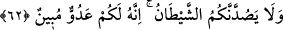
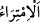

Peygamberimiz (s.a.)’e uyduğu doğru ve sâbittir. Öyle ise Peygamber’in halîfesi olan
Mehdî (a.s.)’a da uyması vâciptir. Çünkü Mehdî (a.s.), Peygamberimiz (s.a.)’in kemâl-i
cem’iyyet sûretinin zâhiridir.
“Kıyâmetin” meydana “geleceğinden hiç şüphe etmeyin,” bu konuda tartışmaya da
girmeyin. “Ve bana uyun; çünkü bu, dosdoğru yoldur.”
“/imtirâ” şüpheli olan konularda tartışmaktır.
Hasan Basri (k.s) şöyle demiştir: “ ifâdesindeki zamir Kur’ân’a râcîdir.
Çünkü Kur’an kıyâmeti bildirmekte ve ona delâlet etmektedir. Bu durumda buradaki ”/hâzâ” Kur’ân’a işâret olur.
62. Sakın şeytan sizi yoldan çevirmesin. Çünkü o, sizin için apaçık bir düşmandır.
“Sakın şeytân sizi yoldan” bana uyma yolundan “çevirmesin. Çünkü o, sizin için
apaçık bir düşmandır.” Onun düşmanlığı açıktır. Zîrâ babanız Âdem’i cennetten
çıkarmış, nur elbisesini soymuş ve sizi böyle bir belâ ile karşı karşıya bırakmıştır.
Hikâye olunur ki: Adem (a.s.) cennetten çıkınca İblis, “Vesvese vererek onu cennetten
çıkardım. Şimdi ona ne yapmalıyım?” dedi. Yeryüzünde bulunan canavarların ve vahşî
hayvanların yanına gitti. Onlara Âdem’den ve ondan meydana gelecek nesilden haber
verdi. Öyle ki vahşî hayvanlar ve canavarlar “bu işin tedbiri nedir?” diye sordular. İblis
onlara “Âdem’i öldürmelisiniz. Zîrâ bir kişiyi öldürmek bin kişiyi öldürmekten daha
kolaydır” dedi. İblis’in öncülüğünde Âdem’in etrafını çevirdiler. Âdem (a.s.)
canavarlar tarafından kuşatıldığını görünce ellerini semaya kaldırıp Allah’a yalvardı.
Allah Teâlâ: “Ey Âdem, elinle köpeğin başını sıvazla” dedi. Âdem (a.s.) köpeğin başını
sıvazlayınca köpek canavarlara ve vahşi hayvanlara saldırıp onları püskürttü. İşte o
günden itibaren köpek, Âdem’in ve âdemoğullarının düşmanı olan canavarlara
düşmandır.
Bu mes’elenin aslı şudur: Âdem (a.s.)’ın hamuru yoğrulup çamuru karılmış olarak
henüz ruh üfürülmeden cennette cansız cesed olarak bekletiliyordu. Bu sırada İblis,
Âdem’in yanına uğrayıp üzerine tükürdü. Tükrüğü, karın üstündeki göbek bölgesine
geldi. Allah Teâlâ Cebrâil (a.s.)’a tükrüğün bulaştığı o bölgeyi kesip almasını emretti.
Sonuçta o bölge çukur yuvarlak bir şekilde kesilip alındı. Allah Teâlâ oradan kesip
çıkarılan bu parçadan köpeği yarattı. İşte bunun için köpek insanlarla ünsiyet kurup onun
koruyucusu ve bekçisi oldu.
Denilir ki; müminin beş düşmanı vardır. Bunlar kıskanç mümin, buğz eden münâfık,
canına kasd eden düşman, kendisini azgınlığa teşvik eden nefis ve insanı saptıran
şeytandır.
Bazı büyükler şöyle demiştir: İnsanı doğru yola uymaktan engelleme konusunda nefsin